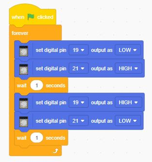
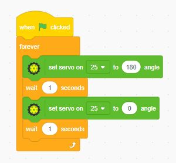

📋 Tata Tertib Ujian Praktik
- Hadir 15 menit sebelum ujian
- Memakai seragam lengkap
- Dilarang mencontek atau bekerja sama
- Menggunakan alat yang disediakan
- Waktu ujian 45 menit
- Wajib mengikuti semua tahap
- Setelah selesai, rapikan alat
⚙️ Prosedur Pelaksanaan
Persiapan: Menyiapkan alat dan menempati tempat.
Pelaksanaan:
- Tahap 1: LED
- Tahap 2: Ultrasonic
- Tahap 3: Servo
- Tahap 4: Bluetooth
Penilaian: Dilakukan langsung oleh penguji.
📝 Teknis Asesmen
- Penilaian kinerja (praktik langsung)
- Penilaian produk (program)
- Observasi sikap
Pembobotan:
- Tahap 1: 20%
- Tahap 2: 20%
- Tahap 3: 20%
- Tahap 4: 25%
- Umum: 15%
📚 Materi Ujian
- Dasar pemrograman (looping & IF)
- Output digital (LED)
- Sensor ultrasonic
- Servo motor
- Bluetooth
📊 Kisi-Kisi Penilaian
| No | Kompetensi | Indikator | Skor |
|---|---|---|---|
| 1 | Output Digital | LED berkedip | 20 |
| 2 | Sensor | Membaca jarak | 20 |
| 3 | Servo | Gerak sesuai kondisi | 20 |
| 4 | Bluetooth | Kirim data | 25 |
| 5 | Sikap | Kerapian & stabilitas | 15 |
Materi
Ikuti langkah-langkah berikut untuk menyelesaikan praktik. Pastikan setiap langkah dilakukan dengan benar untuk hasil yang optimal.
1. Kontrol LED

Pada tahap pertama, kamu akan belajar menyalakan dan mematikan LED menggunakan perintah blok di PictoBlox. Coba buat LED berkedip setiap 1 detik sebagai latihan dasar.
Pelajari2. Kontrol Servo

Sambungkan servo ke pin PWM gpio 25 ESP32. Buat program untuk memutar servo ke sudut 0°, 90°, dan 180° dengan jeda 2 detik.
Pelajari3. Sensor Ultrasonik

Hubungkan sensor ultrasonik ke pin VCC, GND, Trig (gpio 5), dan Echo (gpio 18) ESP32. Buat program untuk mengukur jarak dan tampilkan hasilnya di serial monitor.
Pelajari4. Bluetooth

Pilih ekstensi ESP32 Bluetooth pada menu ekstensi PictoBlox.Hubungkan smartphone ke ESP32 melalui pengaturan Bluetooth. Cari nama "ESP32-BT". Gunakan aplikasi Bluetooth Terminal, kirim karakter seperti "1" untuk nyalakan LED dan "0" untuk mematikan.
Pelajari